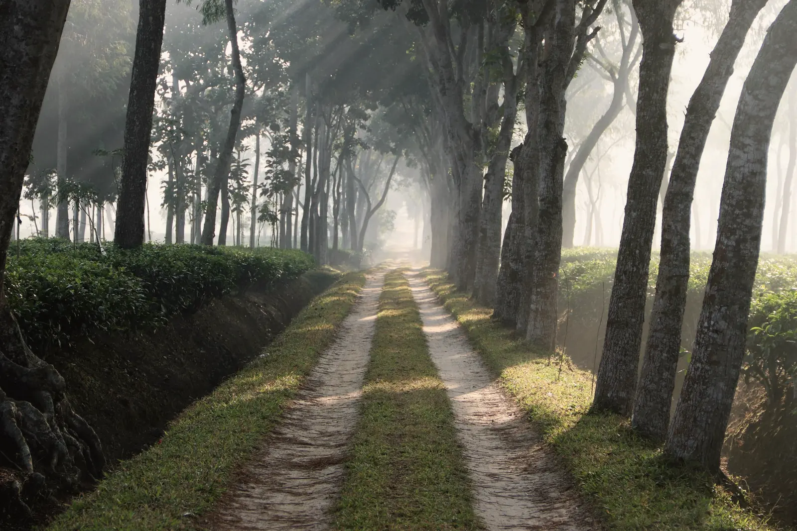
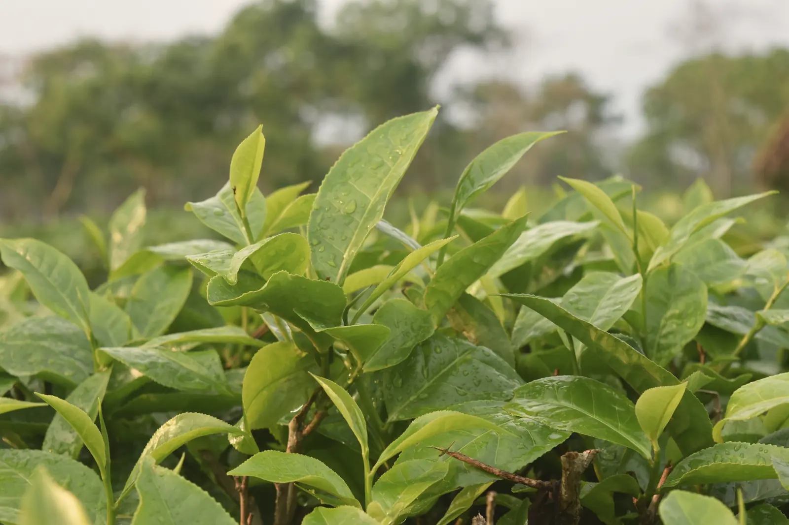
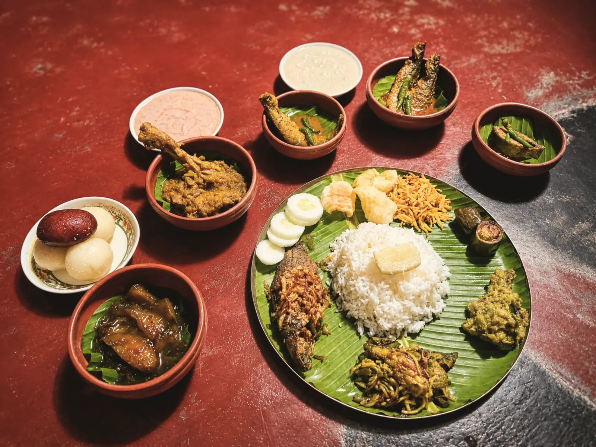

The dawn tea walk
Out at first light with an estate guide, through the sections being plucked that week, to the weighing shed. We keep to the paths and ask before photographing anyone at work.
Included

Sreemangal · Moulvibazar · Bangladesh
The shade-tree avenue, early January
Kuasha · কুয়াশা · mist
Twenty-two rooms in an old tea garden, one long veranda, and very little to do before breakfast except watch the mist leave the tea.


Stay
In the long brick house, each opening onto a shared veranda above the tea.
34 m² · 2 adults + 1 child · King or twin
From ৳14,500 a night, with breakfast
Six stone-and-timber cottages up the slope, each with its own deck.
52 m² + deck · 2 adults + 1 child · King
From ৳21,000 a night, with breakfast
Three timber bungalows with high ceilings, a sitting room and a deep veranda.
78 m² + veranda · Up to 3 guests · Four-poster king
From ৳28,500 a night, with breakfast
Two bedrooms, a garden running down to the water, and a cook if you want one.
140 m² · 4 adults + 2 children · King + twin
From ৳46,000 a night, with breakfast

The shade trees were planted a hundred years ago to keep the sun off the tea. Now they keep it off you.
Days here
Walks at first light, the lake, the forest, a long lunch, the rain. Most of it is included; the rest is priced plainly.
Out at first light with an estate guide, through the sections being plucked that week, to the weighing shed. We keep to the paths and ask before photographing anyone at work.
Included

A loop on the estate’s red-earth roads between shade trees, with a stop for tea at the half-way garden. Easy riding; children’s bicycles available.
Included

The lake fills with lotus after the rains. Take the boat out in the early morning, before the flowers close in the heat.
Included
A walk in the national park with a naturalist, listening for hoolock gibbons. Leech socks are provided in the wet months, and you will want them.
৳3,500 per person

The wetland sanctuary in winter, when the migratory birds arrive. Binoculars, a guide and a packed breakfast; back by lunch.
৳4,800 per person

In the bath house by the garden: a salt soak for tired feet, then a massage with warm river stones and mustard-seed oil.
From ৳4,500

When the rain comes in, the kitchen makes khichuri and beguni and the Tea Room stays open late. The best reason to come in July.
Included

A table at the water’s edge, lanterns, and a set menu from the Long Veranda. One table a night, so ask early.
৳9,500 for two

The Long Veranda
One long dining veranda under a thatched roof, open from seven in the morning. Home cooking from the region, and a short list of plainer things for children.

Afternoon tea is in the Tea Room from four, with the estate’s own leaf.
Local time in Sreemangal: —
Nov – Feb
Cold mornings, mist in the tea until nine, birds at Baikka Beel. Our busiest months; book weekends well ahead.
Bring a warm layer for the evenings.
Mar – Apr
The new leaf comes in and the estate wakes up. Warm days, the first plucking, and the year’s best tea.
Pre-monsoon storms can arrive in April.
Jun – Sep
Green everything, rain on the roofs, lotus on the lake. Quieter, softer, and cheaper.
Roads are slower; allow extra time.
Oct
Clear skies after the rains and long golden afternoons. Puja holidays fill quickly.
The tea walk runs until December.
Offers

Come in the week, when the estate is at its quietest and the mist sits longest. The third night is ours.
From ৳29,000 for three nights

For guests from Sylhet, Moulvibazar and Habiganj: a long day in the garden without staying over. Limited to 30 day guests so the house stays quiet.
৳4,200 per adult · ৳2,100 child (5–11)

Gatherings
A lawn by the lake for 150 under lanterns, the Long Veranda for 80, and the whole estate if you want it. We plan the food, the flowers and the trains; you bring the people.
Getting here